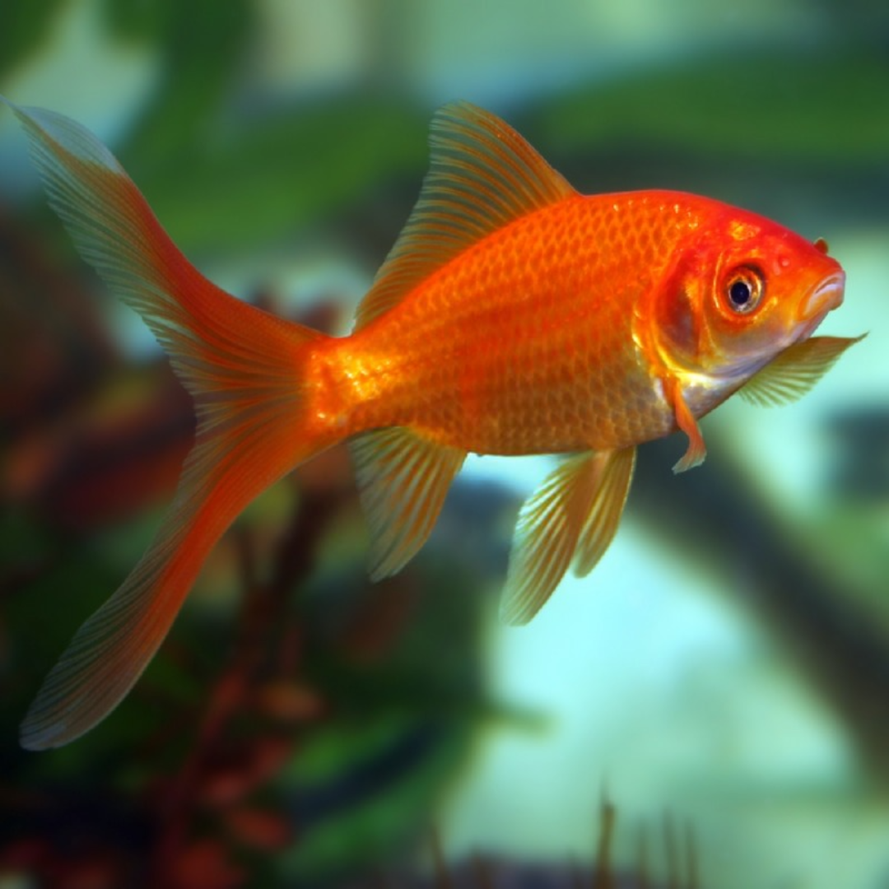

Comet
Comet
EasyFast swimmer with a single long tail. Ideal for ponds & large tanks.
Minimum Tank: 30 Gallons (Should be in Ponds)
Fast swimmer with a single long tail. Ideal for ponds & large tanks.
Minimum Tank: 30 Gallons (Should be in Ponds)
Famous for its raspberry-like head “wen”. Needs pristine water.
Minimum Tank: 20 Gallons
No dorsal fin & curved back; needs shallow, slow-flow tanks.
Minimum Tank: 20 Gallons
Known for their protruding, telescope-like eyes. They require gentle handling and a tank free of sharp objects.
Minimum Tank: 20 Gallons
The most widespread variety, known for its slender body shape, and vibrant orange coloration. They're hardy and relatively easy to care for.
Minimum Tank: 30 Gallons
A popular fancy variety with a split, fan-shaped tail. They are hardy and a good choice for beginners wanting a fancy goldfish.
Minimum Tank: 20 Gallons
Recognizable by their humped back and deep, round body, Ryukin goldfish are elegant swimmers. They're much larger than other goldfish.
Minimum Tank: 20 Gallons
Wakin goldfish have a torpedo-shaped body with a double tail, combining the hardiness of common goldfish with a touch of elegance. Great for outdoor ponds.
Minimum Tank: 30 Gallons
Shubunkin goldfish are hardy and fast swimmers, known for their calico coloring and long, flowing fins. Ideal for ponds and active tanks.
Minimum Tank: 30 Gallons
Lionhead goldfish are easily identified by their hooded "mane" and lack of a dorsal fin. They prefer calm tanks and gentle care.
Minimum Tank: 30 Gallons
Pearlscale goldfish have round bodies and raised, pearl-like scales. They're hardy but sensitive to temperature changes and rough handling.
Minimum Tank: 30 Gallons
Distinctive for the fluid-filled sacs under their eyes, Bubble Eye goldfish need calm waters and no sharp decorations to avoid injury.
Minimum Tank: 20 Gallons